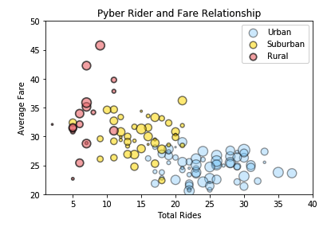
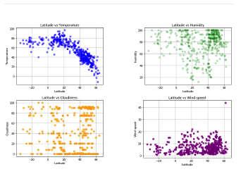
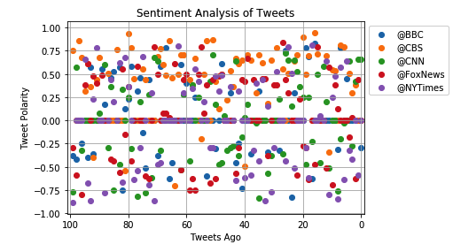
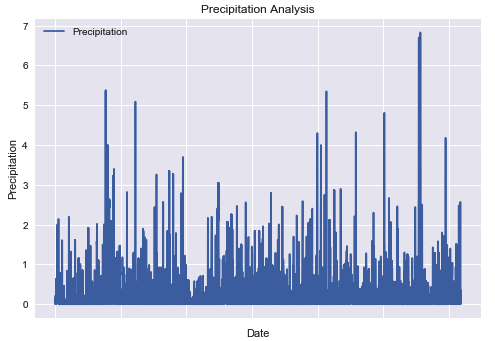

TOP 4 PROJECTS:
CLICK ON EACH TO FIND OUT MORE:
Given a CSV file, analyse city and Uber ride data using Python in Jupyter Notebook with pandas and matplotlib libraries

Use API key for Openweathermap to pull various weather measurements through Python in Jupyter Notebook and visualise the data

Use vaderSentiment and Twitter API keys to pull data from news channels for sentiment analysis

Analyse various climate features, using Python, sqlengine, Flask through Jupyter Notebook
